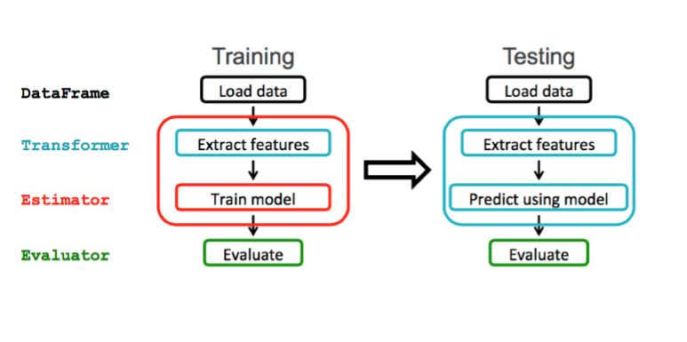
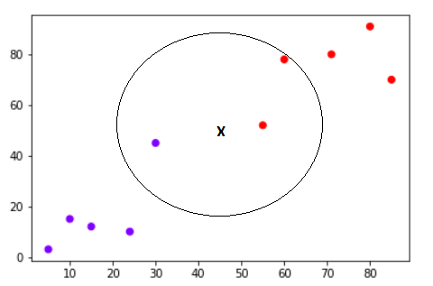
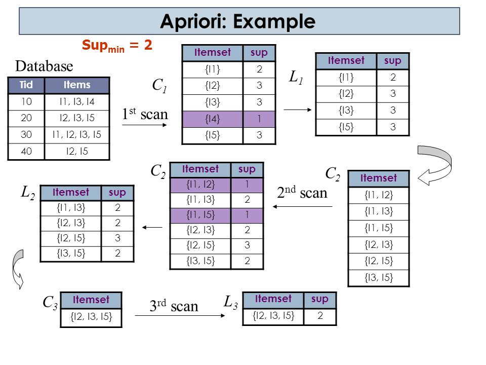
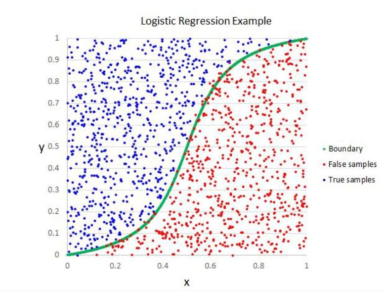
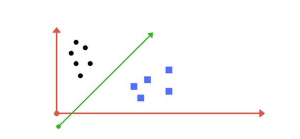
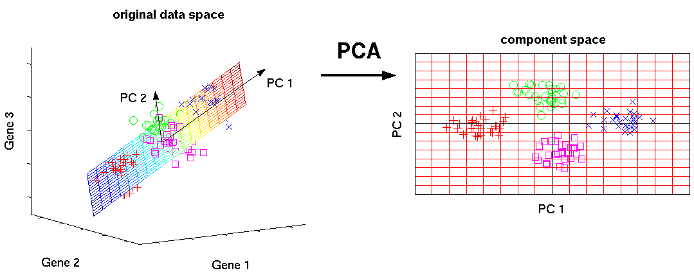
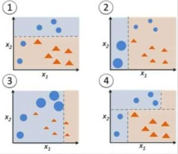

Hello, I am a third year Btech student from Vellore institute of technology.
I am practicing ML, Neural Networks and Big data , since last two years. I find these fields very fascinating which makes me to work more on it.
What is Machine Learning?
Machine Learning is the field of study that gives computers the capability to learn without being explicitly programmed. ML is one of the most exciting technologies that one would have ever come across. As it is evident from the name,it is a technology where we make the machine to learn and perform the desired task as per out requirement.
The process of learning begins with observations or data, such as examples, direct experience, or instruction, in order to look for patterns in data and make better decisions in the future based on the examples that we provide. The primary aim is to allow the computers learn automatically without human intervention or assistance and adjust actions accordingly.
General Working Approach:
In order to implementing a Machine learning algorithm we have to go with two phases:
1. Training
2. Testing
Training: In this phase, the dataset is trained as per the Training Algorithm.
Testing: In this phase, we have to check the accuracy of the algorithm on the dataset.

Types of Machine Learning:
1.Supervised Learning:
In this type of learning the model is trained to predict output from the future inputs.(There is a teacher involved to teach and correct the students)
Eg. For small children there is a teacher to who shows some pictures and make them to identify it. The output is well known before.
2.Unsupervised Learning:
In this type of learning the model is trained to find existing patterns in the data to learn more about it (There is no teacher involved to teach and correct the students, they all learn by them self).The system tries to get some output and compare it with desired output and update it till both become equal.
Eg. There is no teacher for fish to teach swimming. Fish knows it from its birth, it just observes other fishes pattern and improvise itself.
3.Reinforcement Learning:
Reinforcement learning is a type of machine learning algorithm that allows the agent to decide the best next action based on its current state, by learning behaviours that will maximize the reward.
Reinforcement algorithms usually learn optimal actions through trial and error. They are typically used in robotics – where a robot can learn to avoid collisions by receiving negative feedback after bumping into obstacles, and in video games – where trial and error reveals specific movements that can shoot up a player’s rewards. The agent can then use these rewards to understand the optimal state of game play and choose the next action.
Approach which I have followed in the Executions of the Algorithms:
First import all the required python libraries like numpy (for handling numeric data), Pandas(for reading file from the system), matplotlib(for plotting graphs) and sklearn (for using the already made training algorithms).
Read the dataset using pandas library.
Define the features and output on the imported dataset.
Split the dataset into two parts (here we took 80:20) using test_train_split.
Import the required Algorithm(Random Forest ,Multiple Regressor , Decision Tree).
Train the model using the selected algorithm.
Now predict the output using x_test dataset and store it in y_pred.
Compare the y_pred output with the y_test and get the accuracy of the model by using inbuilt accuracy function in sklearn.
Print the score and Plot the necessary graphs and Piecharts.
Machine Learning Algorithm
1. Decision Tree:
This algorithm falls in the category of Supervised Learning and in this Algorithm a tree is plotted for all the features based upon their information gain. The attribute with highest Information gain will come at the Top as it is having the maximum influence in deciding the output.
Now in order to implement Decision Tree we need to find,
Entropy
Gini Index
Information Gain
Step1: We have to find the Entropy of every attribute both parent as well as children attribute in the dataset with respect to the output attribute.
Entropy can be calculated by using the formula E(X) = ∑- p(x)log 2 p(x) for all x € X
Step2: Now we have to find the information gain for all the Target values with the formula
Information Gain(IG) = E(Target) - E(Target, Attribute)
Step3: Select the Attribute which is having higher Information Gain because, Attribute Priority(Feature) ∝ Information Gain Hence the Attribute with high Information Gain will come at the top(root node).
2. Random Forest
As shown in the above Figure, Random Forest is a collection of Random Decision Tree.
In order to implement Random Forest,
Step1: Select some random sets of Data from the available Dataset.
Step2: Apply the Decision Tree Algorithm on it.
Step3: Get the output by input the testing data in all Decision Tree.
Step4: Output from majority of the Trees will be the Result
3. Naive Bayse:
This whole Algorithm Works on the Concept of Probability.
Implementation:
Step 1: Find the probability for all the possibilities in all the features with respect to the output.
This can be done by using the formula:
P(A/B) = P(A ᴖ B )/P(B)
Here A is the different possibilities in the features, and B is the output value i.e. (either Yes or No)
Step 2: Once we have found all the possibilities, now test it for the values from the testing dataset.
eg.
4. K-Nearest Neighbors Algorithm:
It is one of the very simple Algorithm. It is based upon the concept of Distance between the new data points and training data points.
Implementation:
Step1: Check for all the different possibilities in the dataset.
Suppose you have a dataset with two variables, which when plotted, looks like the one in the following figure.
Step 2: Now check the Distance for the new input value, here the distance can be Euclidian distance or Manhattan distance. The testing attribute will belongs to the category with which it is at least distance.
Your task is to classify a new data point with 'X' into "Blue" class or "Red" class. The coordinate values of the data point are x=45 and y=50. Suppose the value of K is 3. The KNN algorithm starts by calculating the distance of point X from all the points. It then finds the 3 nearest points with least distance to point X. This is shown in the figure below. The three nearest points have been encircled.

The final step of the KNN algorithm is to assign new point to the class to which majority of the three nearest points belong. From the figure above we can see that the two of the three nearest points belong to the class "Red" while one belongs to the class "Blue". Therefore the new data point will be classified as "Red".
5. Linear Regression:
It is the most basic and renowned Machine Learning Algorithm. In this Algorithm, a line of best fit (line at a least distance from all the data points) is formed from all the data points.
Implementation:
Step 1: Form an Equation for line of best fit on the dataset. (For example: y = b0 + b1 * x + b2*x2)
Step 2: Input testing attributes in the equation and calculate the output.
6. Apriori Algorithm:
It is a statistical algorithm which has been developed to implement association rule mining.
It is a statistical algorithm which has been developed to implement association rule mining.
Support
Confidence
Lift
Support refers to the default popularity of an item and can be calculated by finding number of transactions containing a particular item divided by total number of transactions.
Confidence refers to the likelihood that an item B is also bought if item A is bought.
Lift(A -> B) refers to the increase in the ratio of sale of B when A is sold.
Implementation:
Set a minimum value for support and confidence.
Filter all the attributes having higher value of support than minimum threshold.
Select all the rules from the subsets with confidence value higher than minimum threshold.
Order the rules by descending order of Lift.

7. Logistic Regression:
This Algorithm is very similar to Linear Regression but here it uses a logistic function to model a binary variable based on any kind of independent variables.

Implementation:
Step 1: Take the dataset inputs and apply the logistic function.
Step 2: Now a boundary will be formed for all the possible outputs.
Step 3: Test it with the testing dataset.
8. Support Vector Machines:
A Support Vector Machine (SVM) is a discriminative classifier formally defined by a separating hyperplane. They can do linear classification, but can use other non-linear basis functions.
Implementation:
Input the labelled dataset.
This Algorithm will output the optimal hyperplane with proper categorization.

Testing Value can fall in anyone of the above plane.
9. Principal Component Analysis:
Principal component analysis(PCA) is a statistical technique to convert high dimensional data to low dimensional data by selecting the most important features that capture maximum information about the dataset.
The features are selected on the basis of variance that they cause in the output. The feature that causes highest variance is the first principal component. The feature that is responsible for second highest variance is considered the second principal component, and so on. It is important to mention that principal components do not have any correlation with each other.

10. AdaBoost Classifier:
Adaboost stands for Adaptive Boosting.

Implementation:
Step 1: Start with 1 decision tree stump to make a decision on 1 input variable.
Step 2: Move to another decision tree stump to make a decision on another input variable.
Step 3: Train another decision tree stump to make a decision on another input variable.